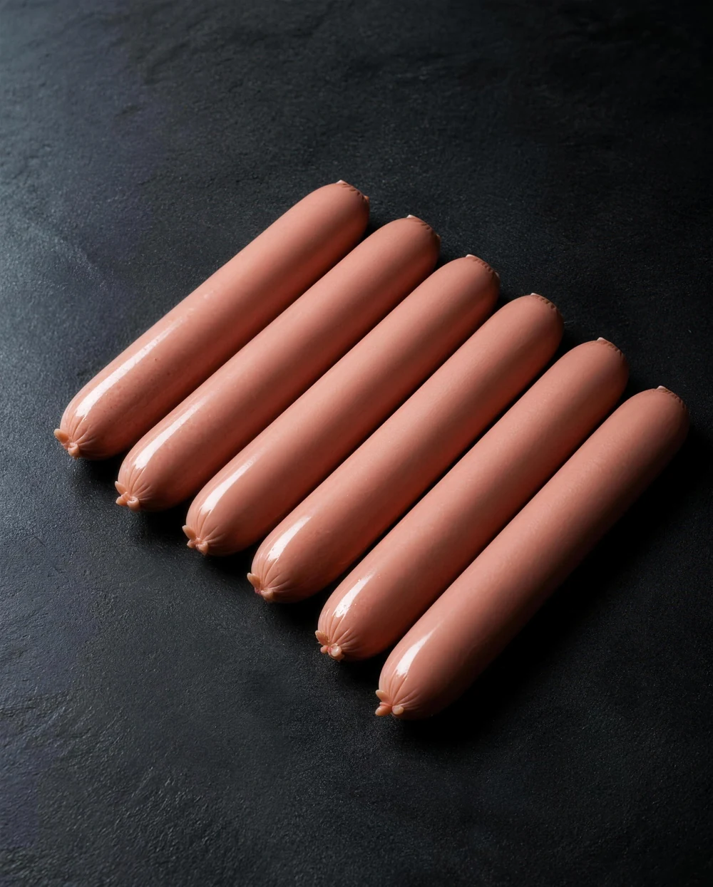
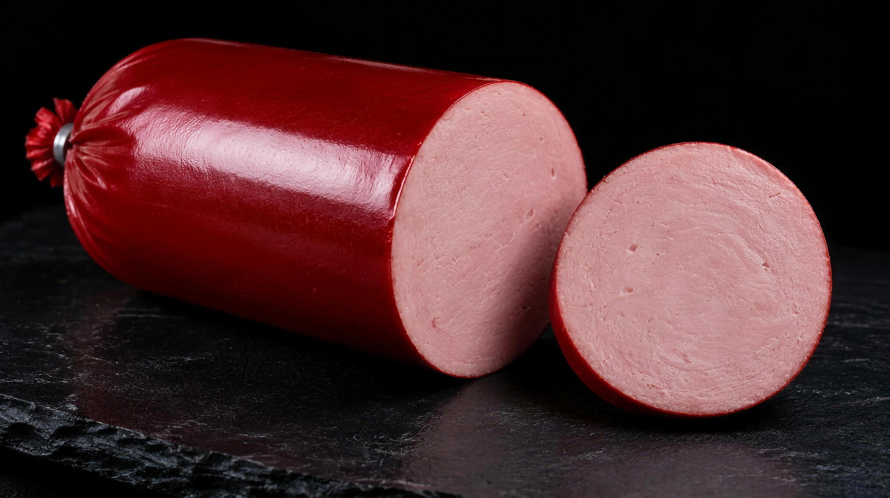
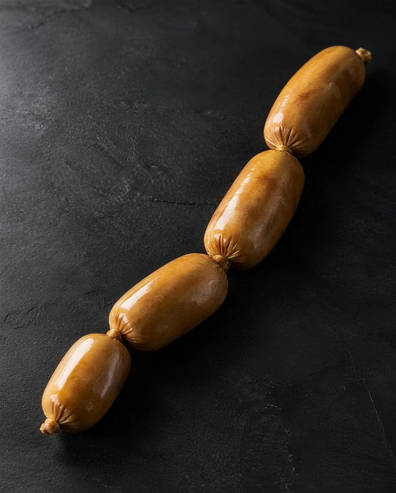
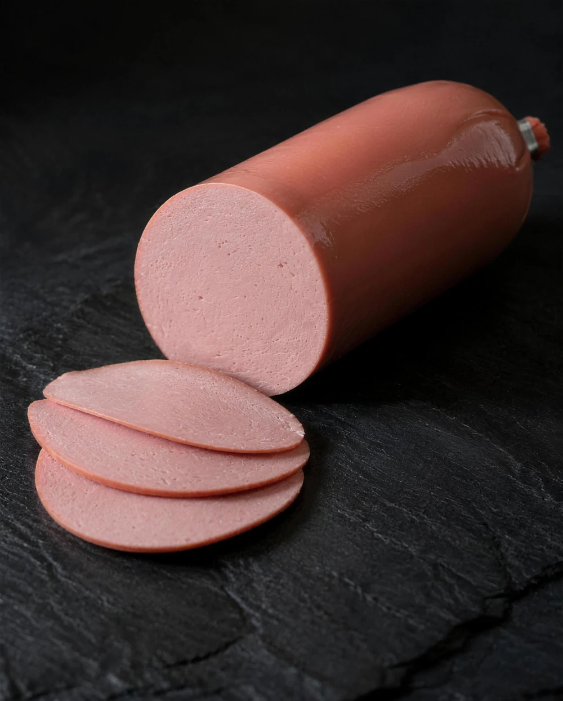
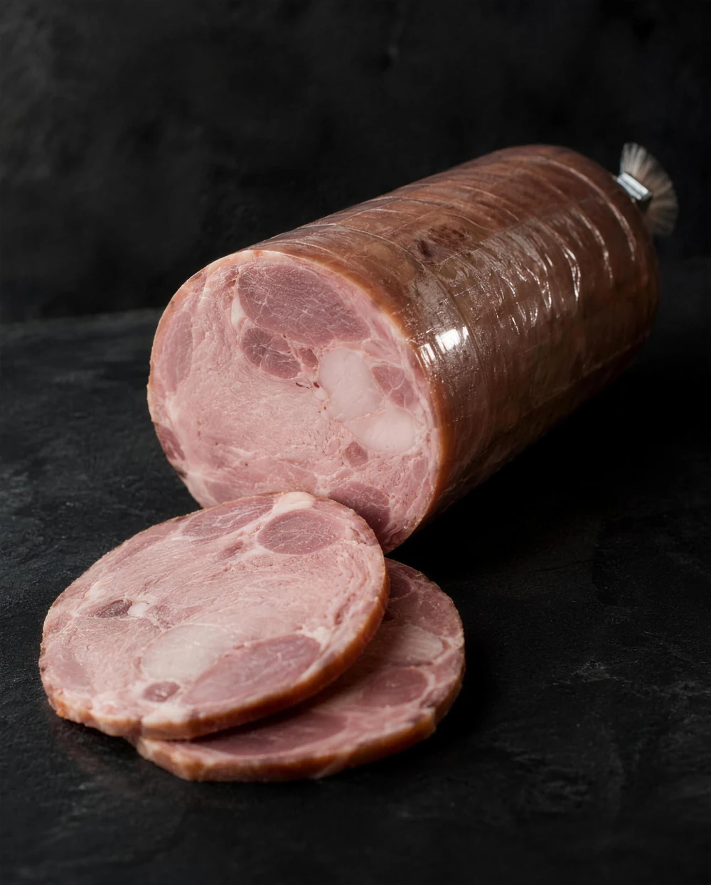
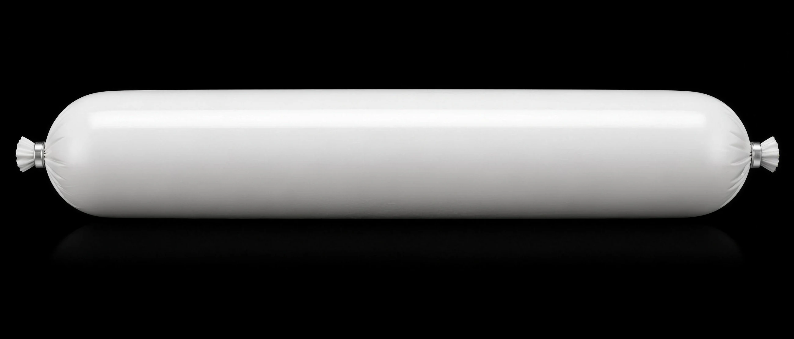
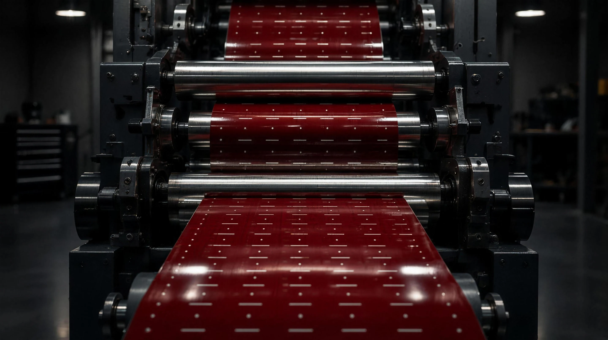
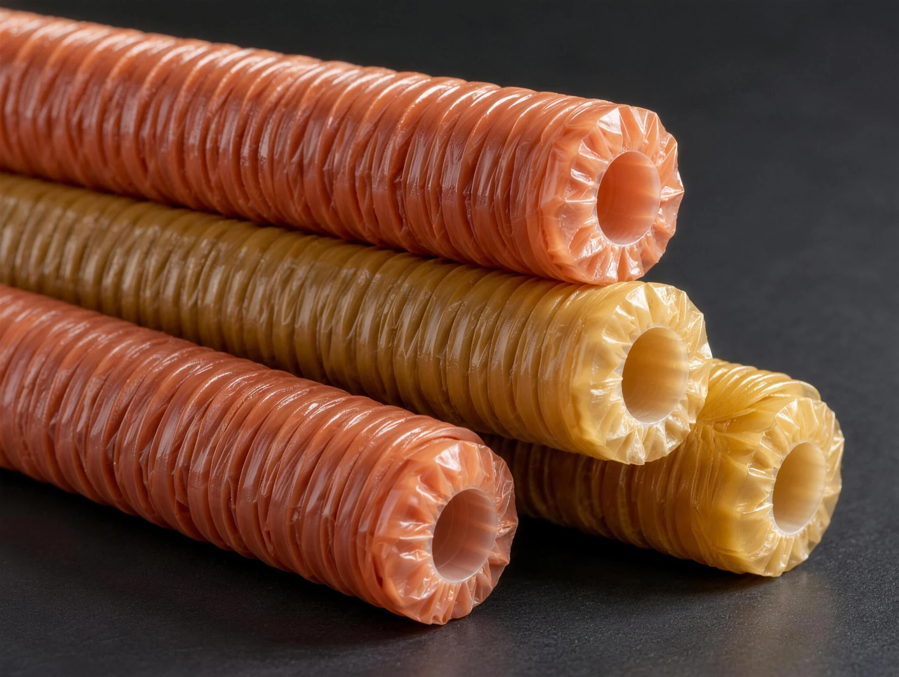
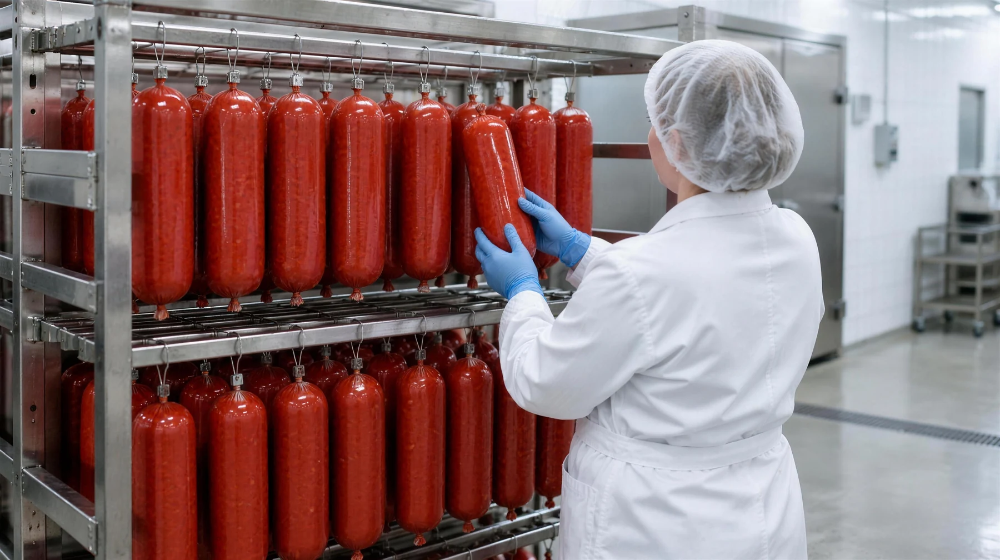

Ø 18–28 мм
Сосиски
Гофрированные палочки под автоматические линии.
Полиамидная колбасная оболочка для мясокомбинатов: печать и гофрирование в собственном цехе, ходовые калибры на складе, отсрочка платежа.
Полиамидную оболочку получают соэкструзией — несколько слоёв сплавляются в одну тонкую плёнку, и у каждого своя задача.
Схема упрощённая: число и состав слоёв зависят от марки оболочки.

Калибр, цвет и марку подбираем под продукт и оборудование. Диапазоны ниже ориентировочные.

Ø 18–28 мм
Гофрированные палочки под автоматические линии.

Ø 30–45 мм
Стабильный калибр и ровная перекрутка в связке.

Ø 45–90 мм
Ровный батон и чистая нарезка без потерь при варке.

Ø 80–120 мм
Прозрачная оболочка плотно облегает и показывает продукт.
Задайте калибр, цвет и маркировку — параметры перейдут в заявку, а мы пришлём образцы и расчёт.


Печатаем и гофрируем сами, без подрядчиков. Поэтому оболочка с вашей маркировкой готова от трёх дней, а небольшая партия не ждёт чужих тиражей.
День 0
ЗаявкаКалибр, цвет, текст, объём.День 1
МакетГотовим и согласуем с вами.День 2
Печать и гофрированиеПроверяем цвет печати и качество гофрирования.День 3
ОтгрузкаОтправляем на ваш комбинат.
Собираем оболочку в гофрированные палочки под ваш шприц и клипсатор. Равномерная гофра — это ровная набивка без заломов, что особенно важно на автоматических сосисочных линиях.
Ходовые калибры и цвета есть на складе — оболочку без печати отгружаем сразу.

Руководитель компании — инженер-технолог. Если на линии появился брак, приезжаем и ищем причину на месте: в рецептуре, режиме термообработки, подготовке оболочки или оборудовании. И только потом предлагаем решение.
Короткие разборы частых вопросов: как выбрать оболочку, подготовить её к набивке, избежать брака и правильно оформить маркировку.
Не нашли ответ? Технолог разберёт вашу задачу и предложит оболочку под линию.
Задать вопросЖёсткого минимума нет. Ходовые позиции отгружаем со склада в любом количестве, оболочку с печатью изготавливаем и небольшими партиями.
Да. Пришлём образцы под ваш калибр и цвет — проведите пробную выработку на своей линии до заказа.
От 3 дней после согласования макета. Если макета нет — подготовим.
Да. Условия обсуждаем индивидуально — они зависят от объёмов и истории работы.
Большинство полиамидных оболочек перед набивкой замачивают, режим зависит от марки. Подскажем его для вашей оболочки и оборудования, а при необходимости приедем на производство.
По всей России — от Калининграда до Дальнего Востока.
Расскажите о продукте и объёме — ответим с расчётом в течение рабочего дня.
Это демонстрационная версия сайта: заявка пока никуда не отправляется. После запуска она будет приходить на почту «Родоса».